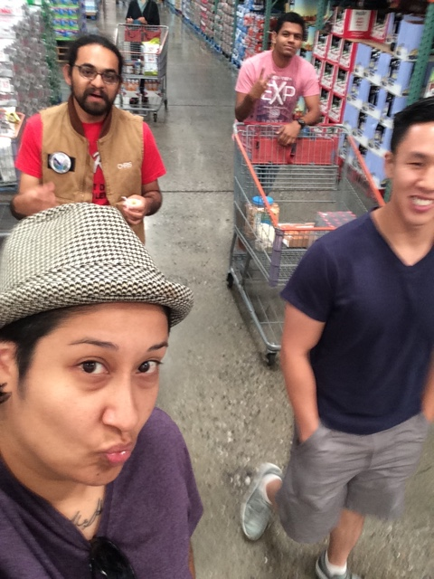
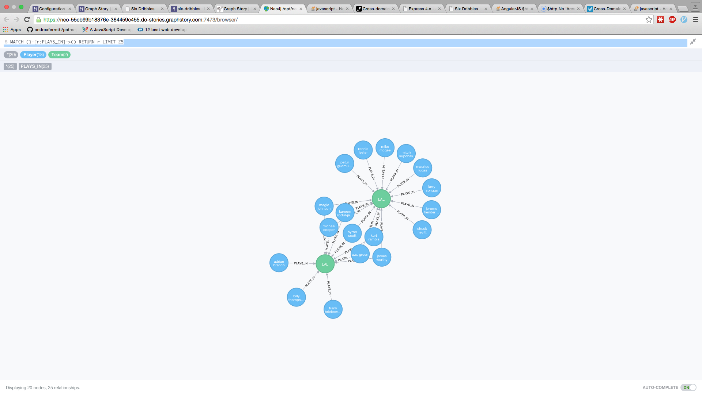
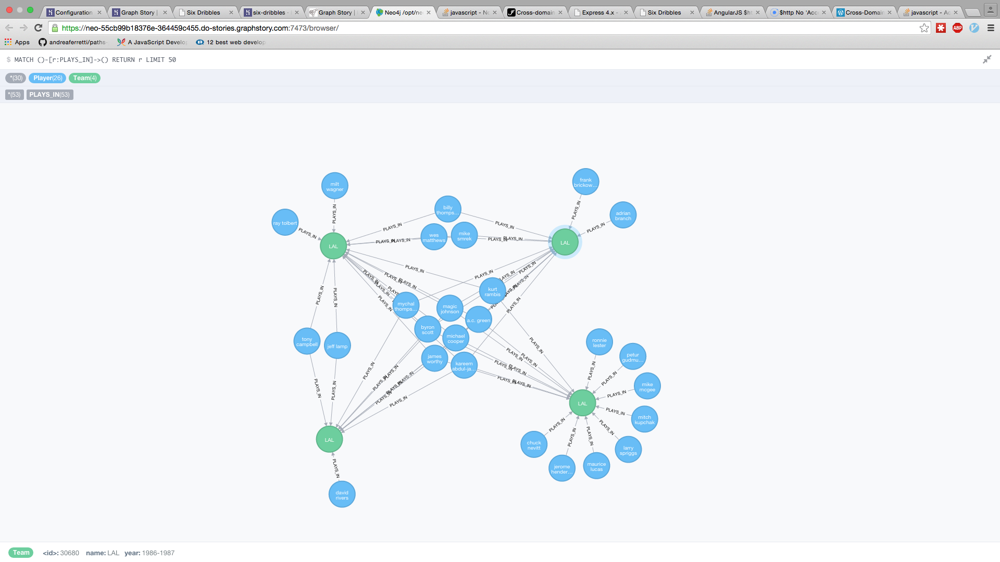
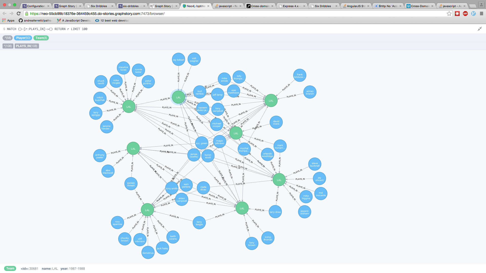
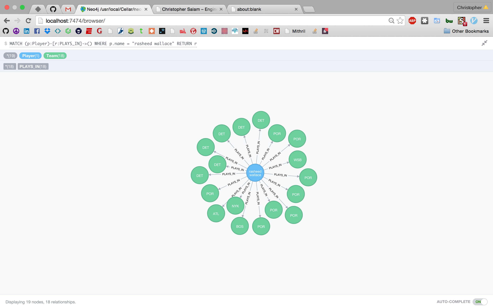

The team that codes together, goes to Costco together

Sample 25 person query...

Sample 50 person query...

Sample 100 person query...

Rasheed Wallace Team Query

********************** LOAD FILE AND CREATE NODES (NON REPEATED PLAYERS, NON REPEATED TEAMS) ******************
LOAD CSV FROM 'file:///Users/CristianAvalos/Desktop/Telegraph_projects/Week6/Greenfield project/sixdegrees/TEST2.csv' as line
MERGE (p:Player {name:line[1]})
MERGE (g:Team {name:line[3], year:line[2]})
return p,g
********************************* CREATE CONNECTION BETWEEN TEAMS AND PLAYERS ********************************
LOAD CSV FROM 'file:///Users/CristianAvalos/Desktop/Telegraph_projects/Week6/Greenfield project/sixdegrees/TEST2.csv' as line
MATCH (p:Player), (t:Team)
WHERE p.name = line[1] AND t.name = line[3] AND t.year = line[2]
CREATE (p)-[r:PLAYS_IN]->(t)
return p, t
**************************************** FIND SHORTEST PATH ***********************************************
MATCH (p1:Player { name:"Russ Smith" }),(p2:Player { name:"Alex Len" }),
p = shortestPath((p1)-[*]-(p2))
RETURN p
*************************************** DELETE NODE AND CONNECTIONS ******************************************
MATCH (n)
OPTIONAL MATCH (n)-[r]-()
DELETE n,r
git fetch upstream
git rebase upstream /master
**************GRAPH STORY******************
USING PERIODIC COMMIT
LOAD CSV FROM 'http://chrissalam.com/six/MasterDB.csv' as line
MERGE (p:Player {name:line[0]})
MERGE (g:Team {name:line[2], year:line[1]})
return p,g;
USING PERIODIC COMMIT
LOAD CSV FROM 'http://chrissalam.com/six/MasterDB.csv' as line
MATCH (p:Player), (t:Team)
WHERE p.name = line[0] AND t.name = line[2] AND t.year = line[1]
CREATE (p)-[r:PLAYS_IN]->(t)
return p, t
-----------
MATCH (p1:Player { name:"russ smith" }),(p2:Player { name:"alex len" }),
p = shortestPath((p1)-[*]-(p2))
RETURN p